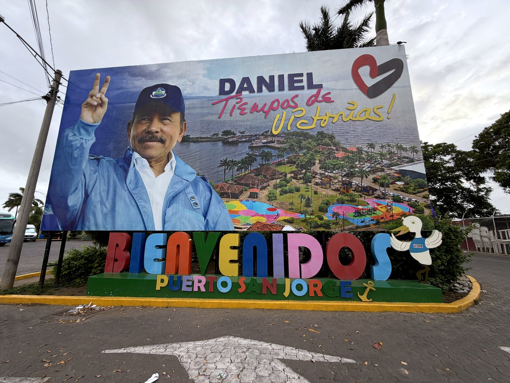
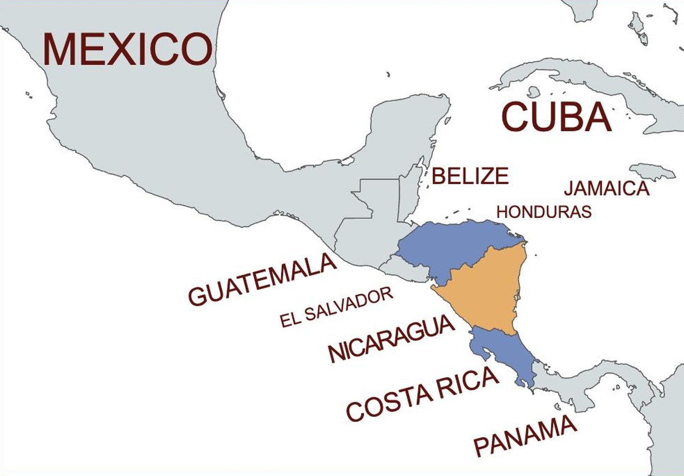
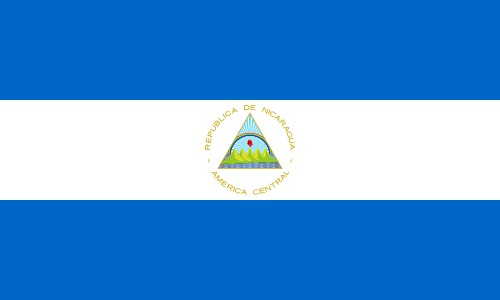
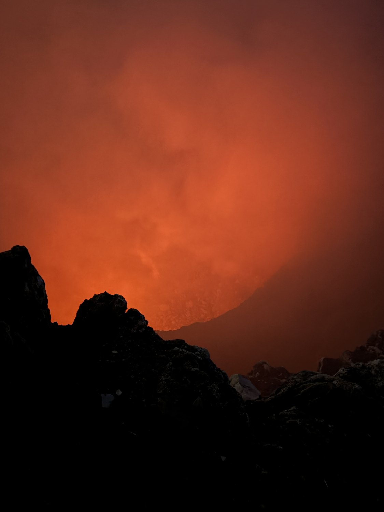
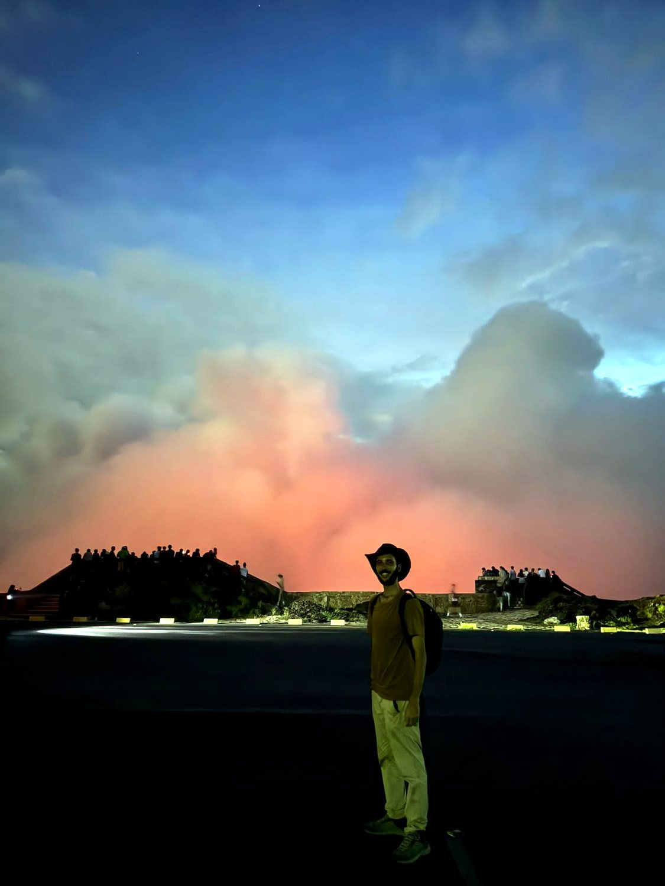
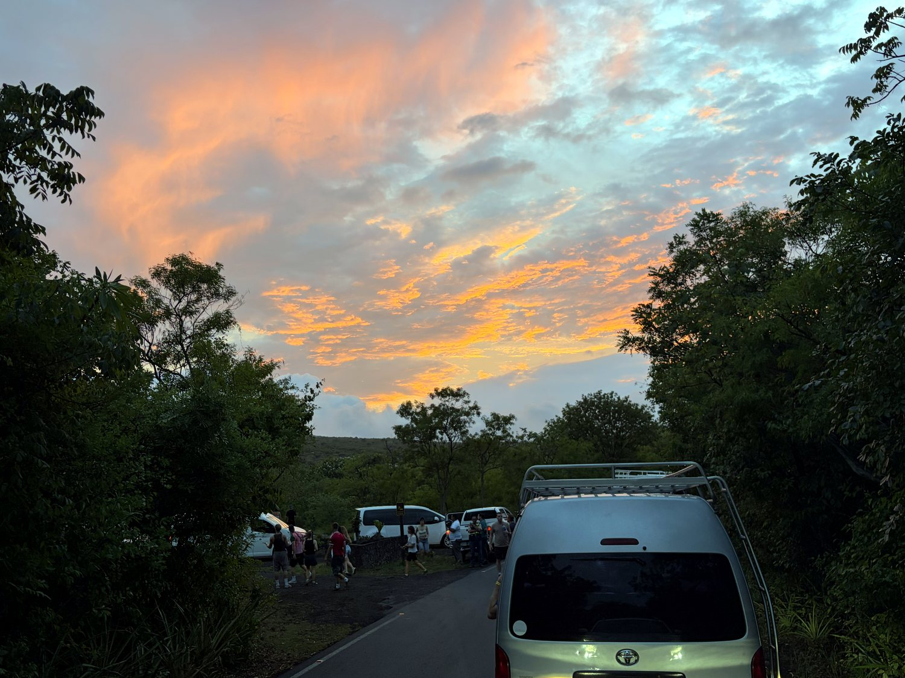
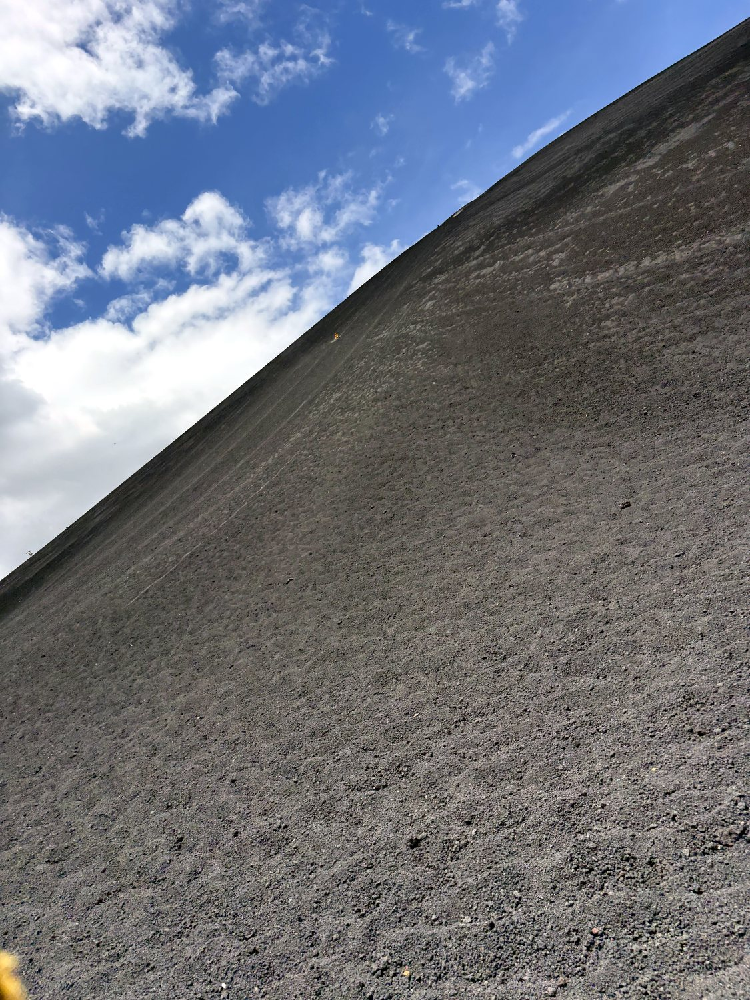
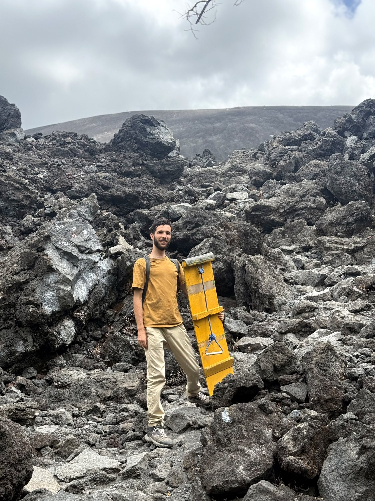
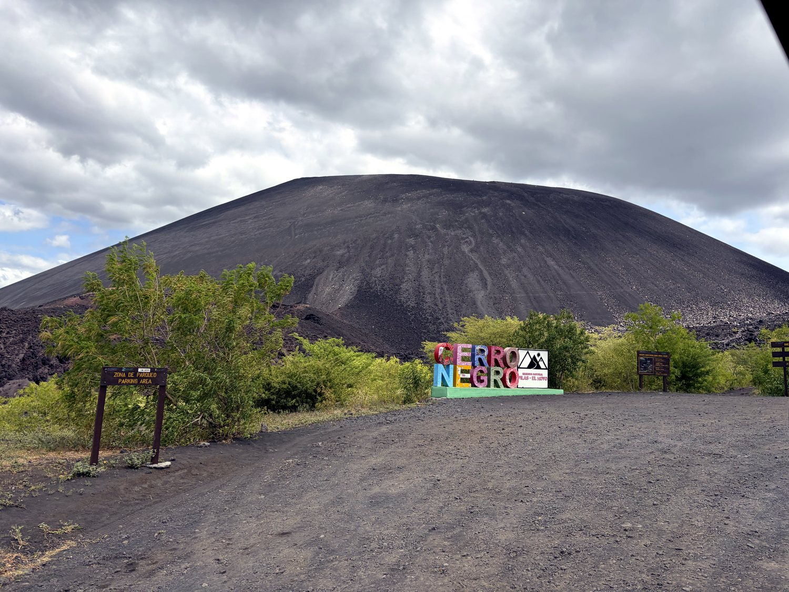
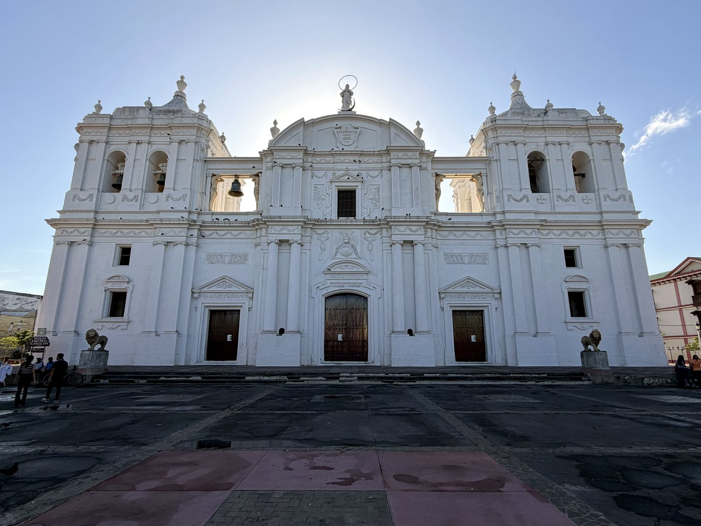

Nicaragua, which I crossed solo in August 2026, gave me the single most chaotic and joyful day of my entire Central America trip. In the space of one afternoon I boarded down the slopes of a live volcano near León, then improvised my way across the country. This involved three communal taxis and hitchhiking in the beds of two separate pickup trucks up to the crater rim of another volcano. It was a day held together entirely by the kindness of strangers, and I remember thinking that if there is a god, he was looking out for me. The Land of Lakes and Volcanoes lived up to its name, a country of staggering natural drama and warm, generous people, shadowed by a politics that has curdled into something dark.
The two Nicaraguan cities I saw properly, colonial León and Granada, are historic rivals. Both are much safer and more colorful than the capital Managua. My visit to Granada coincided with the city’s carnival, and I loved how lively and festive the entire town was. The country’s political situation is a darker note. Nicaragua was ruled by Anastasio Somoza, a US-backed dictator, during the 1970s. The revolutionary Sandinista movement opposed him, and gained control of the country in 1979. They installed Daniel Ortega as President. This guerilla fighter focused on socialist policies such as nationalizing businesses and literacy programs until he was ousted in 1990. Ortega returned to power in 2007, and has ruled the country ever since. Since then, the country has become a dictatorship in all but name. Ortega cancelled elections in 2026, and his family has accumulated over $1 billion in wealth. Everywhere I went, the red-and-black flag of the ruling Sandinista party (FSLN) flew beside the national one, a reminder that in Nicaragua, party and state are one and the same.


Nicaragua's modern history has been shaped, more than almost any country's, by the heavy hand of its northern neighbour. In the 1850s an American adventurer named William Walker actually seized the country and declared himself president, in an infamous filibustering escapade. In the early twentieth century US Marines occupied Nicaragua for the better part of two decades, until a guerrilla leader named Augusto Sandino drove them to leave. The Americans departed, but not before helping install the man who would found the Somoza dynasty, a family dictatorship that would loot and rule the country for over forty years.

In 1979 a broad revolution led by the Sandinistas, who took their name from Sandino, finally overthrew the Somozas, only for the United States to fund a brutal proxy war by the "Contra" rebels throughout the 1980s. From that turmoil emerged Daniel Ortega, who returned to power in 2007 and has held it ever since with a tightening grip. In 2018, mass protests were crushed with lethal force, killing hundreds, many of them students, and the government has since jailed opponents and hollowed out elections. Guides and strangers told me quietly, and always carefully, that people can no longer speak freely for fear of losing their businesses or their liberty. The flag's rainbow and volcanoes speak of a hopeful Central American brotherhood; the reality on the ground is more sombre.
The Masaya Volcano offers one of the most astonishing sights in Central America: an active crater you can drive right up to and peer straight into. On a clear night you can watch a molten lava lake glowing at the bottom. The Spanish, understandably, regarded it with dread, naming it "the Mouth of Hell" and planting a cross on the rim to ward off the devil they were sure lived below. I reached it in the most Nicaraguan way imaginable, hitchhiking into the park in the back of one pickup truck and up to the crater in the back of another, the wind rushing past my face as we climbed. Thick sulfurous steam kept blotting out the view, but every so often it parted to reveal the red glow beneath, and the exhilaration of the whole improvised journey more than made up for it.



Cerro Negro, near León, is the youngest volcano in Central America, born in a fiery eruption in 1850, and one of its most active. Its slopes are made of loose black volcanic gravel, which has given rise to a wonderfully absurd local sport: volcano boarding. You hike to the summit carrying a reinforced wooden board, take in a stunning view of black sand, red rock, distant cones, and the faraway sea, and then hurl yourself down the mountainside. It was an absolute blast. I picked up genuinely alarming speed and lost control near the bottom, tumbling off in a spray of grit, but emerged unhurt and delighted. On the climb up I fell into conversation with Carlos, a trained chemist who opted to work at a hostel because it paid better. He noted with a shrug that the government's recent cancellation of elections had merely made official what was already true.



The Basilica of the Assumption in León is the largest cathedral in Central America, a vast, luminous white pile that took more than a century to complete and now anchors a UNESCO World Heritage city. León has long been the intellectual and revolutionary heart of Nicaragua, a Sandinista stronghold to its core. Around the cathedral and the central plaza, I found moving outdoor memorials to the young Sandinistas killed fighting the Somoza dictatorship. But the tribute sat uneasily with me, because the party those fighters died for is now, under Ortega, the very sort of regime they once rose against. That tension, between a heroic revolutionary past and an authoritarian present, is the essential paradox of Nicaragua today, and nowhere is it more visible than here.
